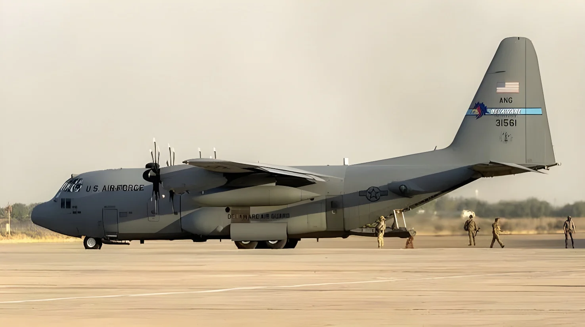

Le mercredi 30 septembre 2026, le Pentagone a annoncé que les derniers militaires américains avaient quitté l'Irak, en partant de la base aérienne d'Erbil, dans la région autonome du Kurdistan. C'était la date butoir fixée par l'accord conclu en 2024 entre Washington et Bagdad. Les États-Unis referment ainsi une présence née de l'invasion de 2003 (interrompue de 2011 à 2014) et mettent fin à la mission contre Daech de douze ans. Les milices pro-iraniennes crient victoire, les Kurdes s'inquiètent.
Le Pentagone et le Commandement central américain (CENTCOM) ont annoncé le « départ ordonné » des forces et du matériel de la coalition de la base aérienne d'Erbil, qui servait de centre opérationnel à la force interarmées de l'opération Inherent Resolve, la mission de la coalition contre l'État islamique. Quelque 1 500 militaires américains et alliés y étaient encore stationnés. Depuis la fin de 2021, les États-Unis maintenaient environ 2 500 soldats en Irak, en mission de conseil et d'assistance aux forces irakiennes.
Le président Donald Trump a salué un départ « ordonné » et a qualifié la mission d'« excursion très coûteuse en enfer ». Il a ajouté que ce jour était « une victoire pour les États-Unis, une victoire pour l'Irak et une victoire décisive sur Daech ».
Le 27 septembre 2024, Washington et Bagdad ont publié une déclaration commune sur le calendrier de fin de la mission militaire de la coalition. Elle devait s'achever en Irak « dans les douze mois, et au plus tard à la fin de septembre 2025 », pour laisser place à des partenariats de sécurité bilatéraux. La mission de soutien en Syrie, menée depuis une plateforme à définir en Irak, devait se poursuivre jusqu'à septembre 2026. Dans les faits, c'est la région du Kurdistan qui a accueilli cette dernière phase.
Le calendrier a glissé : la base d'Aïn al-Assad, dans la province d'Anbar, longtemps la principale base américaine de l'ouest du pays, n'a été remise à l'armée irakienne que le 17 janvier 2026, après un report que les États-Unis justifiaient par l'évolution de la situation en Syrie. Les forces américaines étaient alors restées à la base de Harir, dans la province d'Erbil. La date finale du 30 septembre 2026, elle, a été respectée.
Le Premier ministre irakien Ali al-Zaidi a présidé la passation et salué le début d'« une nouvelle phase, définie par la souveraineté de l'Irak ». Le gouvernement a décrété quatre « journées de la souveraineté » fériées, du 30 septembre au 3 octobre, avec des défilés à Bagdad et à Nadjaf. Dans le Kurdistan, en revanche, le ministère des Peshmergas a jugé que le départ américain, dans ce contexte régional complexe et sans mise en place d'un système de défense, était « un sujet de préoccupation ». Selon lui, la région a subi plus de 1 000 attaques de drones et de missiles balistiques depuis le début de la guerre contre l'Iran.
Les groupes armés proches de Téhéran, eux, revendiquent une victoire. La milice As'hab al-Kahf a félicité les Irakiens pour « le retrait humiliant de l'occupant américain sous les frappes des drones et des missiles de la Résistance ». Le secrétaire général du Kataib Hezbollah, Abu Hussein al-Hamidawi, a affirmé que « la résistance a gagné cette manche » et a démenti tout accord avec le gouvernement sur un désarmement. Les médias rapportent que l'Iran et ses alliés présentent ce départ comme un succès de l'« axe de la résistance ». Bagdad a repoussé à juin 2027 son objectif de remise des armes des groupes non étatiques.
L'intervention américaine commence en mars 2003 avec le renversement de Saddam Hussein. Les effectifs atteignent 170 000 hommes en 2007 et les opérations coûtent la vie à environ 4 500 militaires américains. Barack Obama retire les dernières troupes en décembre 2011. Mais l'offensive de Daech, qui s'empare de Mossoul en 2014, ramène les Américains à la demande de Bagdad : c'est la naissance de la coalition internationale et de l'opération Inherent Resolve. Après la défaite territoriale de Daech, la mission devient une mission de conseil, et le dispositif est ramené à environ 2 500 soldats à la fin de 2021.
Le départ intervient dans un contexte très différent de celui de 2024. Depuis le 28 février 2026, la guerre américano-israélienne contre l'Iran a exposé les bases américaines d'Irak aux attaques des groupes pro-iraniens, en particulier dans le Kurdistan. Elle a aussi mis en lumière la fragilité de la souveraineté irakienne : en mai, la presse américaine révélait l'existence de bases israéliennes clandestines dans le désert irakien. Pour Bagdad, l'enjeu est désormais de convaincre Washington que l'Irak n'est pas sous l'influence de Téhéran.
Invasion de l'Irak par les États-Unis et leurs alliés.
Retrait des dernières troupes américaines sous Barack Obama.
Face à Daech, retour des Américains à la demande de Bagdad ; création de l'opération Inherent Resolve.
Fin de la mission de combat ; environ 2 500 soldats restent en conseil et assistance.
Déclaration commune États-Unis – Irak sur la fin de la mission de la coalition.
Remise de la base d'Aïn al-Assad à l'armée irakienne.
Début de la guerre contre l'Iran ; les bases du Kurdistan sont régulièrement visées.
Départ des dernières troupes de la base d'Erbil.
« Cette étape marque le passage d'une mission de coalition en temps de guerre à un effort de sécurité dirigé par l'Irak, soutenu par une relation bilatérale de sécurité plus normale. »
— Sean Parnell, porte-parole du Pentagone (traduction)Pour l'Irak, la fin de la présence américaine est un symbole fort. Mais elle ne règle ni la question des groupes armés proches de l'Iran, que Bagdad n'a pas réussi à désarmer, ni celle de la défense aérienne, que le pays peine à assurer. Les experts redoutent aussi un retour des cellules dormantes de Daech, que les moyens de renseignement américains aidaient à surveiller. Washington assure qu'il continuera d'apporter « une formation ciblée et un soutien en renseignement » et que ses forces, présentes dans la région, pourraient intervenir si Daech redevenait une menace. La relation devrait donc passer d'une présence visible à une coopération bilatérale, dans le cadre de l'accord-cadre de 2008. Pour les États-Unis, c'est la fin d'un cycle ouvert en 2003, au moment même où ils sont en guerre contre l'Iran.
On Wednesday 30 September 2026, the Pentagon announced that the last US troops had left Iraq, pulling out of Erbil Air Base in the semi-autonomous Kurdistan Region. It was the deadline set by a 2024 agreement between Washington and Baghdad. The United States thus closes a presence that began with the 2003 invasion (and was interrupted from 2011 to 2014) and ends its 12-year mission against the Islamic State. Iran-backed militias are claiming victory, while Kurdish officials are worried.
The Pentagon and US Central Command (CENTCOM) announced the "orderly departure" of coalition forces and equipment from Erbil Air Base, which served as the operational hub of the task force for Operation Inherent Resolve, the coalition mission against the Islamic State. About 1,500 US and coalition personnel were still stationed there. Since late 2021, the United States had kept around 2,500 troops in Iraq on an advise-and-assist mission supporting Iraqi forces.
President Donald Trump praised an "orderly" departure and called the mission "a very expensive excursion into Hell". He added that the day was "a victory for the United States, a victory for Iraq, and a decisive victory over ISIS".
On 27 September 2024, Washington and Baghdad issued a joint statement setting the timeline for ending the coalition's military mission. It was to conclude in Iraq "over the next twelve months, and no later than the end of September 2025", making way for bilateral security partnerships. The mission supporting operations in Syria, run from a platform to be determined in Iraq, was to continue until September 2026. In practice, it was the Kurdistan Region that hosted this final phase.
The schedule slipped: Ain al-Asad air base in Anbar province, long the main US base in western Iraq, was handed to the Iraqi army only on 17 January 2026, after a delay the United States attributed to developments in Syria. US forces had then stayed on at Harir air base in Erbil province. The final deadline of 30 September 2026, however, was met.
Iraqi Prime Minister Ali al-Zaidi presided over the handover and welcomed the start of "a new phase, one defined by Iraq's sovereignty". The government declared four public "Sovereignty Days", from 30 September to 3 October, with parades in Baghdad and Najaf. In Kurdistan, by contrast, the Peshmerga Ministry said the US departure, in these complex regional circumstances and without a defense system being provided, was "a matter of concern". It says the region has faced more than 1,000 drone and ballistic-missile attacks since the war against Iran began.
Armed groups close to Tehran, meanwhile, claim a win. The militia As'hab al-Kahf congratulated Iraqis on "the humiliating withdrawal of the American occupier under the strikes of the Resistance's drones and missiles". Kataib Hezbollah's secretary general, Abu Hussein al-Hamidawi, said that "the resistance has won this round" and denied any agreement with the government on disarmament. Media reports say Iran and its allies are presenting the exit as a success for the "axis of resistance". Baghdad has pushed back to June 2027 its goal of bringing non-state groups' weapons under state control.
The US intervention began in March 2003 with the overthrow of Saddam Hussein. Troop levels peaked at 170,000 in 2007, and the operations cost the lives of about 4,500 US service members. Barack Obama pulled out the last troops in December 2011. But the rise of ISIS, which seized Mosul in 2014, brought the Americans back at Baghdad's request, giving birth to the international coalition and to Operation Inherent Resolve. After ISIS lost its territory, the mission became an advisory one, and the force was cut to about 2,500 troops by late 2021.
The departure comes in a very different setting from 2024. Since 28 February 2026, the US-Israeli war against Iran has exposed US bases in Iraq to attacks by pro-Iranian groups, especially in Kurdistan. It has also highlighted the fragility of Iraqi sovereignty: in May, the American press revealed the existence of clandestine Israeli bases in the Iraqi desert. For Baghdad, the challenge now is to convince Washington that Iraq is not under Tehran's sway.
The United States and its allies invade Iraq.
The last US troops leave under Barack Obama.
Facing ISIS, the Americans return at Baghdad's request; Operation Inherent Resolve is created.
End of the combat mission; about 2,500 troops stay on an advise-and-assist role.
US–Iraq joint statement on ending the coalition's mission.
Ain al-Asad air base is handed to the Iraqi army.
The war against Iran begins; bases in Kurdistan are regularly targeted.
The last troops leave Erbil Air Base.
"This milestone marks a transition from a wartime coalition mission to an Iraqi-led security effort supported by a more normal bilateral security relationship."
— Sean Parnell, Pentagon spokesmanFor Iraq, the end of the US presence is a powerful symbol. But it settles neither the issue of the Iran-aligned armed groups, which Baghdad has not managed to disarm, nor that of air defense, which the country struggles to provide. Experts also fear a return of ISIS sleeper cells, which US intelligence assets helped to monitor. Washington says it will keep providing "targeted training and intelligence support" and that its forces, present in the region, could step in if ISIS became a threat again. The relationship is therefore expected to shift from a visible presence to bilateral cooperation, under the 2008 Strategic Framework Agreement. For the United States, it closes a cycle opened in 2003, at the very moment it is at war with Iran.